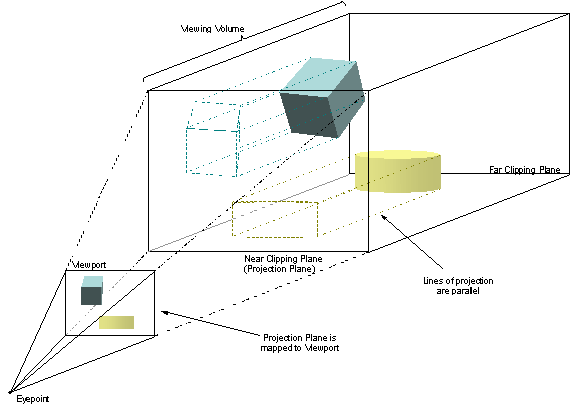

CIGI Host Emulator 3
|
CIGI Host Emulator 3 |
An orthographic parallel projection is one where the lines of projection are parallel to the sides of the viewing volume and perpendicular to the projection plane. This type of view is typically used for two-dimensional views such as "God’s eye" views and heads-down displays. Figure 14 illustrates an orthographic projection of a three-dimensional viewing volume onto a viewport.

Orthographic Parallel Projection onto a Viewport
The scene within the viewing volume is projected onto the projection plane. Because the lines of projection are parallel, the apparent sizes of any objects within the viewing volume do not vary with distance from the projection plane.
The projection plane is mapped to the viewport, where the projected scene is displayed.
As with a perspective projection, the width and height of the viewing volume of an orthographic projection is directly proportional to the sizes of the angles formed at the eyepoint between the viewport sides and the viewing vector. The depth of the volume is the distance between the near and far clipping planes.
|
© 2008 The Boeing Company |
rev 3.3.0 |